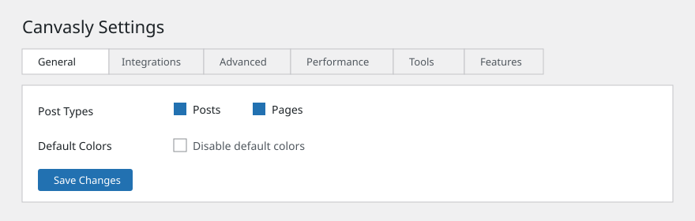

Install Canvasly first. Install Canvasly Pro only after Canvasly is active and at least version 0.12.73.
Updated . Covers Canvasly 0.12.76 and Canvasly Pro 0.6.3.

After activation, Canvasly adds its own menu in WordPress admin. Settings is one item in that menu.
Before you install
WordPress 6.9 or later. The readme says the plugins were tested up to WordPress 7.1.
PHP 7.4 or later.
Canvasly Pro will not start if Canvasly is missing, switched off, or older than 0.12.73. In those cases WordPress shows an admin notice and Pro does not load.
Shop units appear only while WooCommerce is active. Cart, checkout, and My Account use WooCommerce’s own forms.
The plugin files do not name another plugin that Canvasly refuses to run beside. On the normal WordPress block editor screen, Canvasly deliberately stays out of the way except for the Canvasly Template block and an Edit with Canvasly launcher.
Install Canvasly
In WordPress, go to Plugins → Add New → Upload Plugin and upload the Canvasly zip, or place the plugin folder in wp-content/plugins/.
Activate Canvasly on the Plugins screen.
Open a page or post and choose Edit with Canvasly. The same link is in the admin bar on the front of the site and in wp-admin.
The Canvasly menu opens on the Dashboard. The visual builder is listed there as Editor. From the dashboard you can also start a new page in the editor.
Install Canvasly Pro
Confirm Canvasly is active.
Upload and activate Canvasly Pro.
Open Canvasly → License to enter a license key. The screen shows ACTIVE or INACTIVE, with Activate, Deactivate, and Renew.
Activating Pro creates a table used to store form submissions. Turning Pro off does not delete that table. The readme says the table is removed only on uninstall.
Pro menu items are added under Canvasly: License, Theme Builder, Motion, Payments, Fonts & Icons, Submissions, Custom Code, and AI Connection. You only see a screen if your WordPress role is allowed to open it.
Edit an existing page
Posts and Pages can be edited with Canvasly as soon as you activate it. Other public content types stay off until you tick them under Canvasly → Settings → General or Canvasly → Design System.
Choose Edit with Canvasly from the list of pages, from the block editor, or from the admin bar. Save in the Canvasly editor, then use WordPress to publish or update the page.